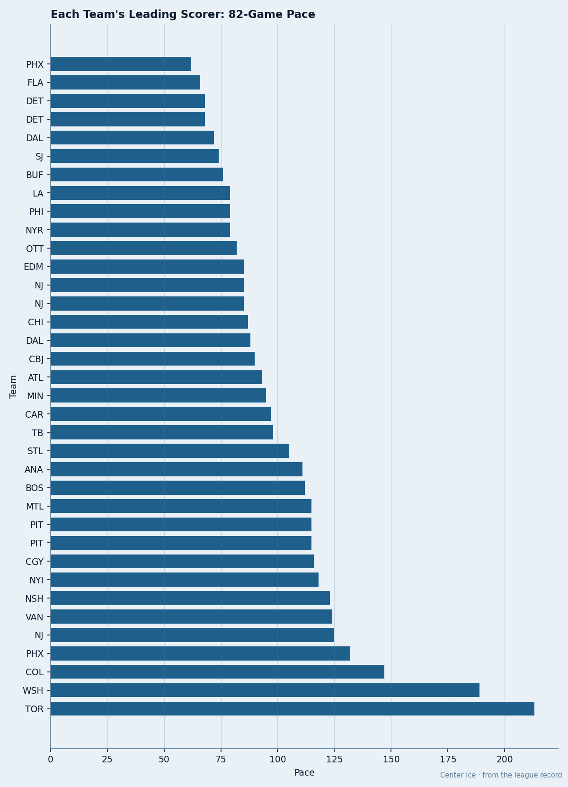
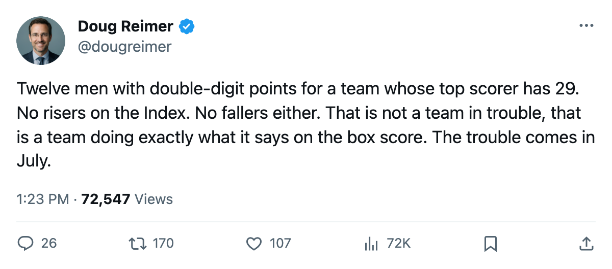
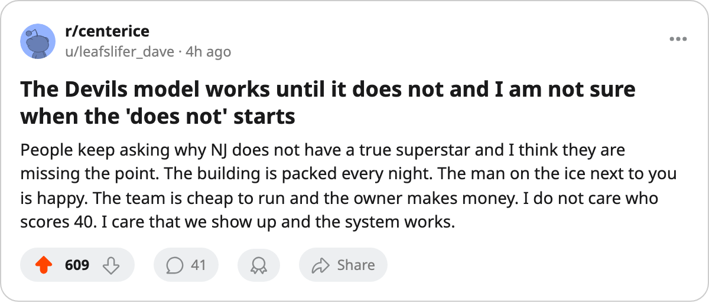

29 Points, 12 Men in Double Digits, 7 UFAs: The Devils Sell Out With the Flattest Offense in Hockey
No man in New Jersey has scored 30. The Devils are 3rd in the East, 5th-cheapest per point, and 2nd at the gate. Their top scorer earns $2.10M and walks in July.
 Doug ReimerAnalytics editor, ex-video coach · The Slot Report
Doug ReimerAnalytics editor, ex-video coach · The Slot Report
 New Jersey Devils has a 29-point team leader.
New Jersey Devils has a 29-point team leader.  Jamie Langenbrunner86 and
Jamie Langenbrunner86 and  Scott Gomez77 are tied at 29 points in 28 games. No club outside
Scott Gomez77 are tied at 29 points in 28 games. No club outside  Phoenix Coyotes has a lower single-player ceiling. The Devils sit 3rd in the Eastern Conference with 39 points in 27 games, 5 clear of 8th-place
Phoenix Coyotes has a lower single-player ceiling. The Devils sit 3rd in the Eastern Conference with 39 points in 27 games, 5 clear of 8th-place  Pittsburgh Penguins.
Pittsburgh Penguins.
That is the model. No man carries the scoring. Twelve Devils have reached 10 points; that total is 2nd in the league behind  Toronto Maple Leafs's 14. Four have 20 or more. The top man's 29 represents a smaller slice of the team's production than any comparable offensive club in hockey. The Devils are not a team waiting for someone to break out. They are a team that decided nobody would.
Toronto Maple Leafs's 14. Four have 20 or more. The top man's 29 represents a smaller slice of the team's production than any comparable offensive club in hockey. The Devils are not a team waiting for someone to break out. They are a team that decided nobody would.
The Top of the Roster
Here are the four New Jersey Devils skaters whose grades and contracts appear in the Bureau's Book and Contract Ledger:
| Player | Pos | GP | PTS | Pace | Overall | Salary | Years Left |
|---|---|---|---|---|---|---|---|
| Jamie Langenbrunner | RW | 28 | 29 | 85 | 88 | $2.10M | 0 |
| Scott Gomez | C | 28 | 29 | 85 | 83 | — | 4 |
 Jeff Friesen86 Jeff Friesen86 | LW | 25 | 26 | 85 | 88 | $7.08M | 1 |
 Patrik Elias86 Patrik Elias86 | LW | 28 | 19 | 56 | 88 | $4.90M | 0 |
Three of these four carry an 88 overall. All three are producing below their grade: Langenbrunner at an 85 pace, Friesen at an 85 pace on only 25 games (he has been in and out with a rib and two unnamed spells), Elias at 56. The Devils are fielding three 88-grade skaters and getting 85-grade production from two of them and 56 from the third.
Langenbrunner at $2.10M with zero years remaining is the cheapest 29-point man in hockey. Friesen at $7.08M with one year left will either sign above that number or walk for a pick. Elias at $4.90M with zero years remaining has a 56 pace and is the most expensive underperformer on the roster.

The Business of No One Being Great
The New Jersey Devils payroll sits at $58.20M, 11th in the league. Cost per point is $1.49M, the 5th-cheapest in hockey behind  Nashville Predators at $1.25M,
Nashville Predators at $1.25M,  Dallas Stars at $1.32M,
Dallas Stars at $1.32M,  Edmonton Oilers at $1.34M, and Pittsburgh Penguins at $1.44M. Profit is $31.19M, 2nd behind Toronto Maple Leafs at $35.66M. Attendance is 16,954 per game, the 2nd-highest in the league behind Toronto's 17,948. Revenue is $58.15M, 3rd behind Toronto and
Edmonton Oilers at $1.34M, and Pittsburgh Penguins at $1.44M. Profit is $31.19M, 2nd behind Toronto Maple Leafs at $35.66M. Attendance is 16,954 per game, the 2nd-highest in the league behind Toronto's 17,948. Revenue is $58.15M, 3rd behind Toronto and  Detroit Red Wings.
Detroit Red Wings.
The Devils are selling the most tickets in hockey to a team whose best player has 29 points on a $2.10M contract. The room carries 91.3 morale, 10th in the league.
Injuries have not broken the system. New Jersey Devils has logged 18 designated spells and 51 days lost, the 5th-fewest in the league.  Martin Brodeur93 has appeared in 22 of 27 games at an 81% share. The team has not needed a medical miracle to stay in the top four.
Martin Brodeur93 has appeared in 22 of 27 games at an 81% share. The team has not needed a medical miracle to stay in the top four.
The Development Index Says Nothing
No New Jersey Devils player appears on the Bureau's Development Index riser list. No Devil is on the faller list either. The Index measures movement against a player's Book base, and the Devils have produced exactly zero measurable movement in either direction across their entire roster. Twelve men are producing roughly what the Book says they should, which is precisely the point of the system.
Langenbrunner carries an 88 overall in the Book. He is not on a hot streak. He is not cold. He is an 88-grade right winger producing at a 90 morale and a 29-point total that ties for the team lead. The same holds for Elias at 88 and Friesen at 88. The Devils field three 88-grade skaters at the top of their lineup and none of them is playing above their number.
The July Problem
Seven of the twelve double-digit scorers carry zero years remaining. That is what the Contract Ledger shows. The three whose contracts I can name with certainty: Langenbrunner at $2.10M, Elias at $4.90M, and Brodeur at $6.70M with 3 years left, the only man at the top of this roster who is not going anywhere.
Friesen is the hinge. At $7.08M with 1 year remaining, 88 overall, 25 games played and 26 points, he is either extended at a premium or traded by what the calendar has as the trade deadline on 2006-03-19, 94 days away. The Devils cannot lose him for nothing. He is too expensive to lose for nothing.
Gomez has 4 years remaining. He is the one piece that stays regardless. Everything else is July.
The question the Devils face is not whether the system works. It works. They are 3rd in the East, 5th in cost per point, and 2nd at the gate. The question is whether a system that depends on three 88-grade skaters producing at exactly 88 can survive the market for three 88-grade skaters hitting unrestricted free agency in the same summer.

